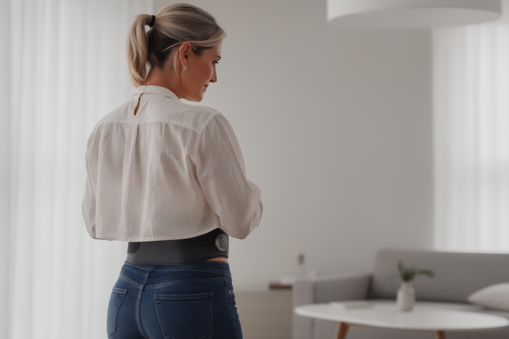
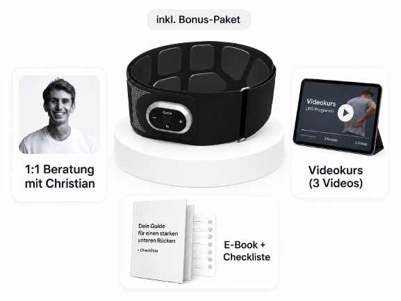
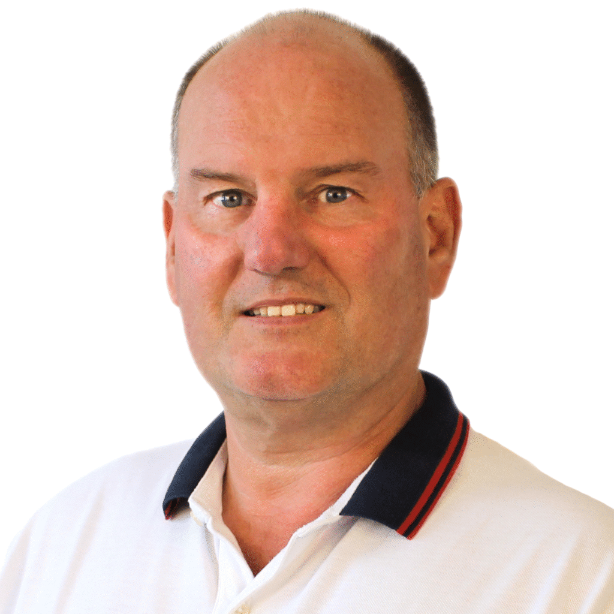

Der Wellenpuls LWS aktiviert die tiefe Rumpfmuskulatur: die seitliche Bauchmuskulatur und den unteren Rücken. 20 Minuten. Zweimal pro Woche. Auf der Couch, während du eine Serie schaust. Kein Studio, kein Übungsprogramm, keine Willenskraft nötig.
Der Wellenpuls LWS aktiviert die tiefe Rumpfmuskulatur, die deine Körpermitte von innen stützt und den unteren Rücken entlastet. 20 Minuten, zweimal pro Woche, auf der Couch. Kein Studio, kein Übungsprogramm, keine Willenskraft nötig.

Mit dem Östrogen sinkt in den Wechseljahren die Kollagenbildung. Das Bindegewebe im ganzen Körper wird lockerer, auch die Naht zwischen den geraden Bauchmuskeln. Dazu lagert sich mehr Fett im Bauchraum ein und drückt von innen. Eine früher kaum sichtbare Lücke, die Rektusdiastase, kann so aufgehen.
Werte aus Erkenntnissen zum Kollagenrückgang nach der Menopause. Schematisch, keine individuelle Messung.
Der Weg zurück führt über die tiefe Bauchmuskulatur, vor allem den queren Bauchmuskel: das natürliche Korsett der Körpermitte. Übungen dafür wirken. Aber sie verlangen genau das, was im vollen Alltag am knappsten ist: planbare, regelmäßige Zeit. Genau dafür wurde der Wellenpuls LWS entwickelt.

Die tiefe Bauchmuskulatur. Das ist der Kern des Problems.
Wenn das Bindegewebe nachlässt, wird vor allem der quere Bauchmuskel, die tiefste Schicht der Bauchwand, vom Nervensystem kaum noch gefordert. Er liegt so tief, dass klassische Bauchübungen ihn oft gar nicht richtig erreichen. Die Folge: Die Mitte verliert Halt, der Bauch wölbt sich vor, und der untere Rücken übernimmt die Stabilisierung, für die er nicht gemacht ist.
Bauch-Workouts helfen. Übungsprogramme helfen. Das Problem ist ein anderes: Beides erfordert regelmäßigen Aufwand, Woche für Woche, über Monate. Genau da scheitern die meisten nicht an fehlender Disziplin, sondern an einem vollen Alltag.
Neuromuskuläre Elektrostimulation, gezielt für die tiefe Rumpfmuskulatur.
NMES wird seit Jahrzehnten in Kliniken und Rehazentren eingesetzt. Das Prinzip: Elektrische Impulse lösen echte Muskelkontraktionen aus, ohne dass du dich aktiv bewegst. Auch die Forschung zur Rektusdiastase zeigt in diese Richtung: In einer randomisierten Studie verringerte sich die Lücke mit Training plus NMES etwa doppelt so stark wie mit Training allein.*
Der Wellenpuls LWS bringt diesen Reiz aus der Praxis zu dir nach Hause: Er aktiviert die seitliche Bauchmuskulatur und den unteren Rücken. Echte Muskelkontraktionen. Echter Muskelaufbau. Ohne Übungen. Ohne Termine. In 20 Minuten auf der Couch.
*Kamel & Yousif 2017, randomisierte kontrollierte Studie. Ergebnisse einer Studie mit begleitendem Training; individuelle Ergebnisse können variieren.
| Wellenpuls LWS | Übungsprogramm | Bauch-Workout | EMS-Studio | |
|---|---|---|---|---|
| Tiefe Rumpfmuskulatur aktivieren | ✓ | ✓ | ✓ | ✓ |
| Ohne tägliche Übungsroutine | ✓ | ✗ | ✗ | ✓ |
| Zuhause, ohne Termin und Anfahrt | ✓ | ✓ | ✗ | ✗ |
| Einmalige Kosten statt laufender | ✓ | (je nach Programm) | ✗ | ✗ |
| Speziell für die tiefe Rumpf- und LWS-Muskulatur entwickelt | ✓ | ✗ | ✗ | ✗ |
| Wärmefunktion | ✓ | ✗ | ✗ | ✗ |

Der Wellenpuls LWS kommt mit einer 30-tägigen Geld-zurück-Garantie. Vier Wochen Zeit, das Gerät zu testen. Wenn du keinen Unterschied spürst, gibst du das Gerät einfach zurück. Ganz unkompliziert.

Als Christian Senfleben an der Deutschen Sporthochschule Köln seine Masterarbeit schrieb, begleitete er Menschen mit einer geschwächten Rumpfmuskulatur. Was ihn beschäftigte: Viele wussten, was sie tun sollten. Aber im Alltag fehlte schlicht die Zeit, die Termine, die Konsequenz. Ein Gerät, das das Training einfach und alltagstauglich macht, gab es nicht. Also hat er selbst eines entwickelt.
Die Patentanmeldung folgte im Juni 2024. Das Gerät wird durch Land NRW, Bund und EU gefördert.
Wenn du nach deiner Bestellung Fragen hast, erreichst du Christian persönlich per E-Mail.
Du weißt jetzt, warum deine Mitte in den Wechseljahren weicher wird. Du weißt, was die eigentliche Ursache ist. Und du weißt, dass es einen Ansatz gibt, der in deinen Alltag passt, statt noch mehr von deiner Zeit zu verlangen.
Du kannst morgen wieder ein Bauch-Workout anfangen. Noch eine Diät starten. Oder noch ein Jahr abwarten, ob sich doch noch etwas von allein tut.
Oder du bestellst heute.